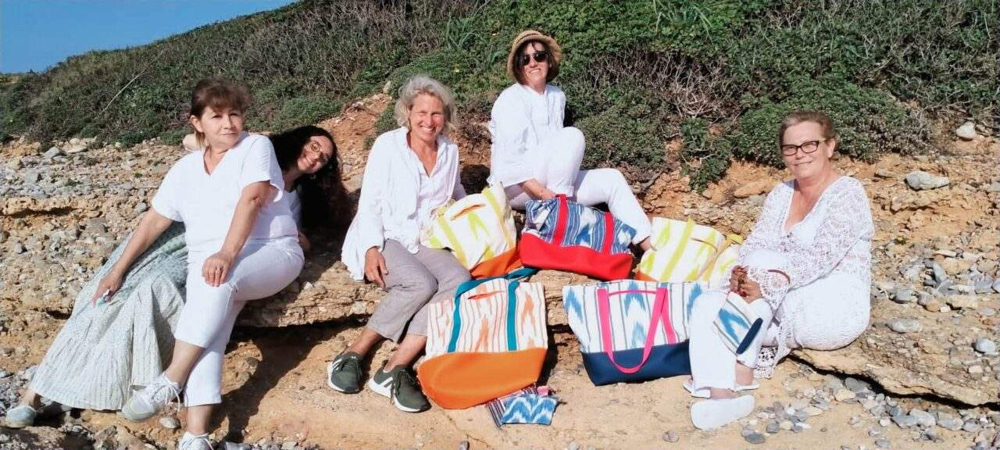

Grants programme project
¡animO arta!
A locally organised sewing initiative created in Artà, Mallorca, during the economic disruption of COVID-19.
Project overview
Practical skills in a moment of disruption
¡animO arta! began in Artà, Mallorca, in December 2020 as a local response to the economic effects of the COVID-19 pandemic.
Working with the local council, the initiative brought together residents facing financial difficulty for a sewing workshop led by a professional seamstress.
Participants learned to make bags using Mallorcan IKAT fabric, creating a practical route to skills, income and continued making beyond the workshop.
Who the project serves
A local response built around making
The initiative supported local residents whose livelihoods had been affected by the pandemic.
Materials, machines and expert guidance created a shared setting in which practical skills could become products and new confidence.
Partnership in practice
What the partnership enables
Skills training
A professional seamstress guided participants through the techniques needed to make finished products.
Tools & materials
Sewing machines and Mallorcan IKAT fabric supported practical workshop activity.
Livelihood opportunity
Participants could make and sell bags, with some continuing to use the skills afterwards.
Get involved
Support community-led opportunity
Support can help locally organised initiatives turn practical skills into confidence and livelihood opportunity. Contact the foundation to discuss involvement.